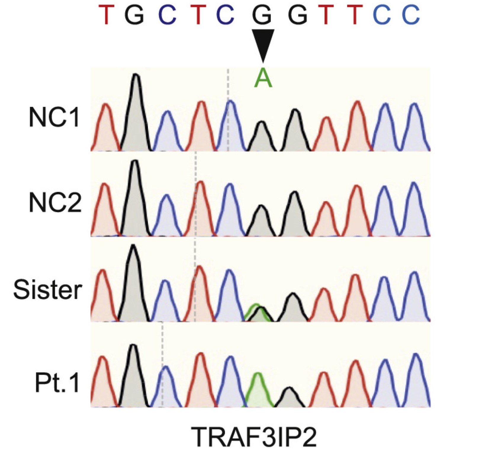

TRAF3IP2-AS1通过直接结合下调PARP1 mRNA
TRAF3相互作用蛋白2（TRAF3IP2）是一种适配器蛋白，通过其与成纤维细胞生长因子基因和IL-17R结构域的类似表达与IL-17R相互作用，并在IL-17细胞因子刺激后协调2个独立的促炎症途径。TRAF3IP2在HG刺激的心肌细胞中表达增加，TRAF3IP2的干扰抑制了HG诱导的细胞活力丧失、细胞毒性、炎症反应、氧化应激和心肌细胞的凋亡，TRAF3IP2的干扰可以减轻HG诱导的炎症和心肌细胞的凋亡。
参考文献:

TRAF3IP2基因组DNA序列图，2个正常对照组（NCs）姐妹组和病人。箭头表示错义突变
介导肥胖相关的血管胰岛素抵抗和雄性小鼠的功能障碍.jpg)
注释图3TRAF3IP2 ( TRAF3相互作用蛋白2 )介导肥胖相关的血管胰岛素抵抗和雄性小鼠的功能障碍